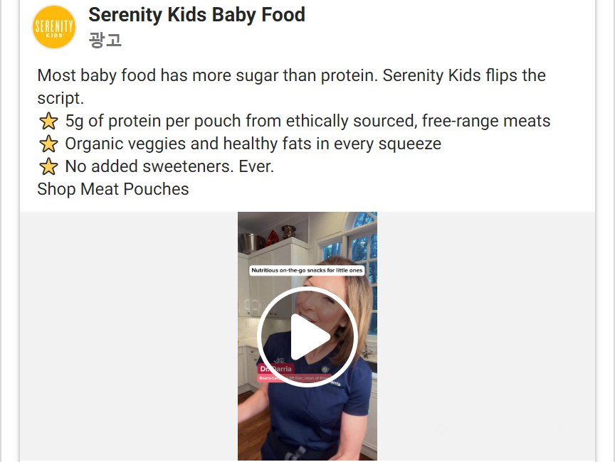
세레니티 키즈 (미국 유아식)
Meta 광고 라이브러리 · 9월 11일부터 게재 중 (광고 2개에서 사용)
가져온 것 “5g of protein per pouch” — 단백질 숫자는 작은 체크 목록으로, 큰 제목은 엄마 말투로.
원본 보기 ›이슈 #1291 · 최종 테스트 세트 · 10.20 수정
리뷰 · 밥태기 · 영양 · 밥태기+영양, 네 가지 메시지를 메타 피드·스토리, 네이버 GFA, 구글 디스플레이에 바로 올릴 수 있게 4가지 사이즈로 만들었습니다. 리뷰 각도는 기존 4차 후기형(한우깻잎나물불고기)을 그대로 썼고, 나머지 세 각도는 크래미달걀찜으로 같은 틀 세 가지에 큰 제목만 바꿨습니다. 아이·엄마 사진과 「13개월부터 먹는 아이반찬」은 모든 장에 들어갑니다.
세로로 보면 같은 틀, 가로로 보면 같은 각도입니다. 같은 줄끼리 비교하면 큰 제목 말고는 사진·색·배치가 같아서, 클릭 차이가 곧 메시지 차이입니다.
| 2 · 밥태기 | 3 · 영양 | 4 · 밥태기 + 영양 | |
|---|---|---|---|
| 틀 1 · 에디토리얼 (3차) |  밥태기 온 우리 아이도 |  채소·단백질 골고루 챙긴 아이반찬 |  밥태기에도 잘 먹고 영양까지 챙긴 아기 달걀찜 |
| 틀 2 · 다크 (5차) |  숟가락만 보면 고개를 돌리나요? |  쑥쑥 크는 우리 아이, 단백질은 달걀로 |  숟가락 거부하던 아이도 잘 먹는 단백질 반찬 |
| 틀 3 · 질문형 (5차) |  밥 안 먹던 우리 아이도 한 그릇 뚝딱 |  단백질에 채소까지 골고루 챙긴 아기 달걀찜 |  밥 안 먹던 아이도 잘 먹고, 영양까지 |
리뷰 각도(3안)는 기존 4차 후기형을 그대로 썼습니다.
각도 1
기존 4차 후기형(한우깻잎나물불고기) 3안을 그대로 썼습니다. 1080×1350과 빠져 있던 가로 사이즈만 같은 디자인으로 더 만들었습니다.
틀 · 기존 4차 후기형 그대로 · zyzy*** 후기

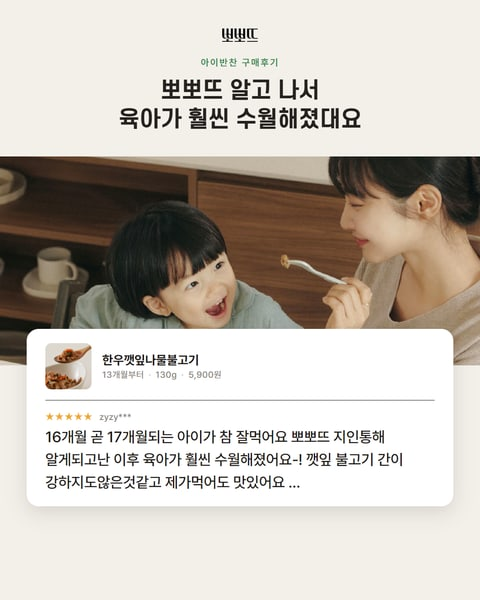
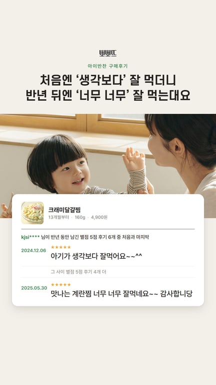
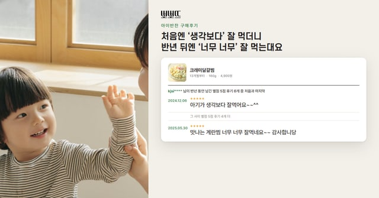
틀 · 기존 4차 후기형 그대로 · 세로형은 jomi***·choi**** 후기 2개, 정사각·가로는 choi**** 후기 1개 (정사각·가로 제목: 반찬 주면 아이가 밥을 너무 잘 먹는대요)

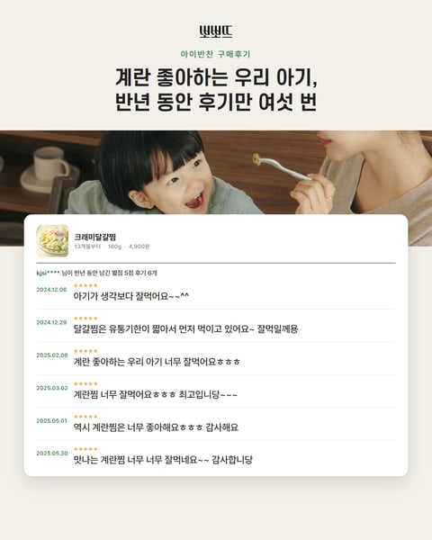
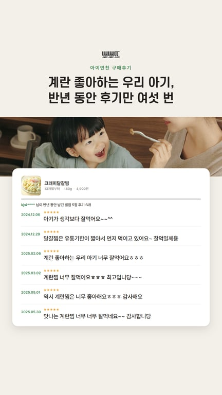
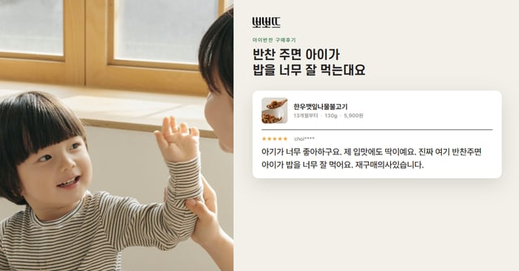
틀 · 기존 4차 후기형 그대로 · qktk*** 후기

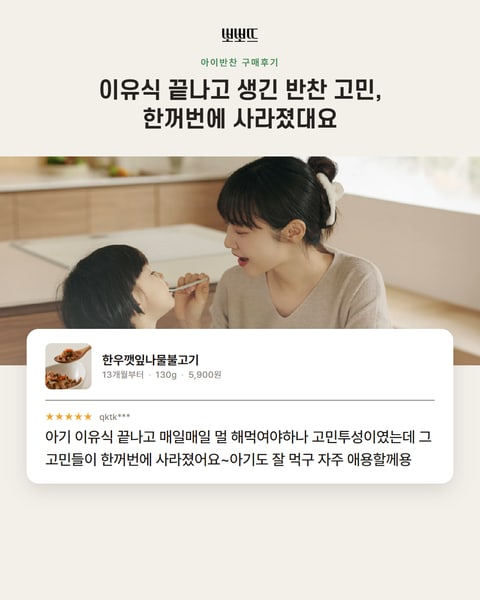
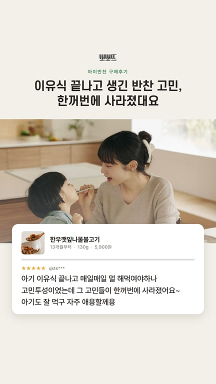
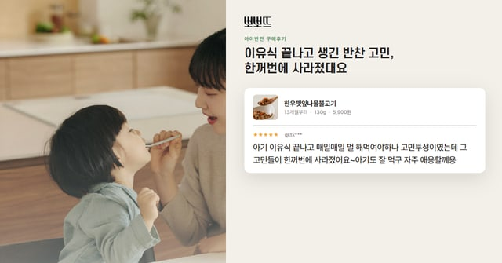
각도 2
큰 제목에 밥태기(안 먹던 아이가 잘 먹는다). 기존 3·5차에서 고른 문구입니다.
틀 1 · 에디토리얼 (3차) · 작은 글: 잘 먹는 크래미달걀찜

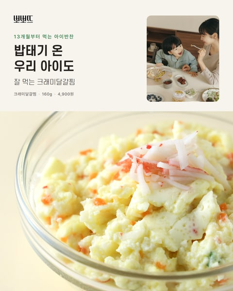
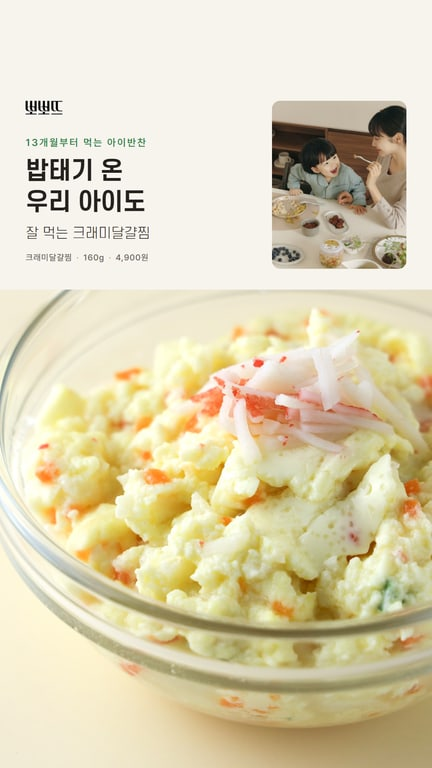
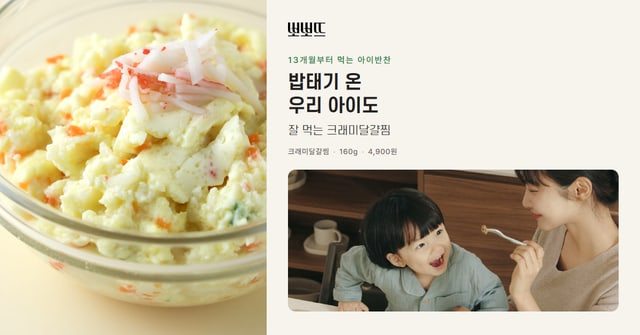
틀 2 · 다크 (5차) · 작은 글: 부드러운 아기 달걀찜, 한 숟갈부터

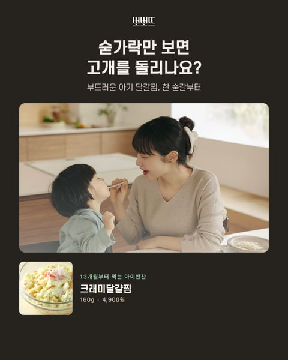
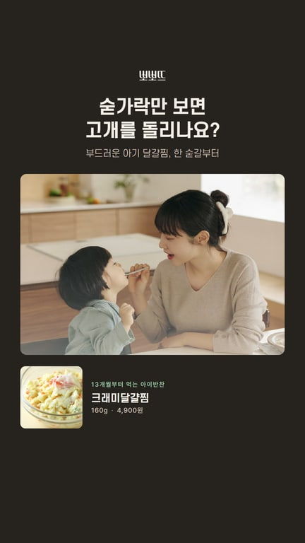
틀 3 · 질문형 (5차) · 작은 글: 국산 달걀로 부드럽게 찐 크래미달걀찜

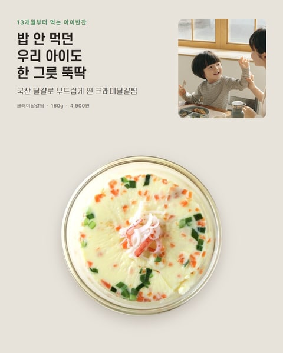
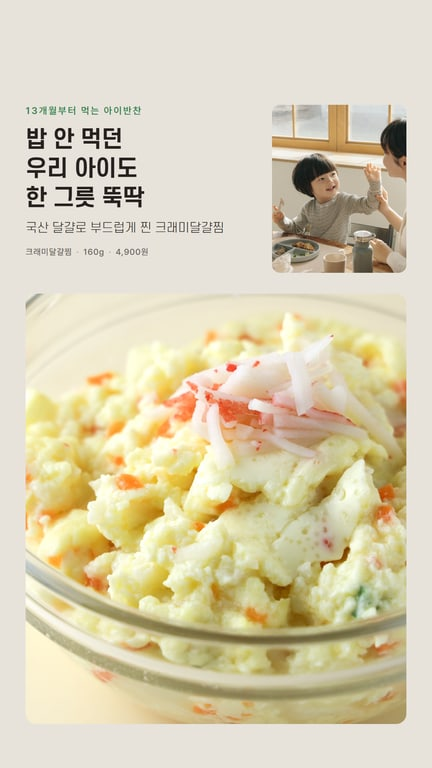
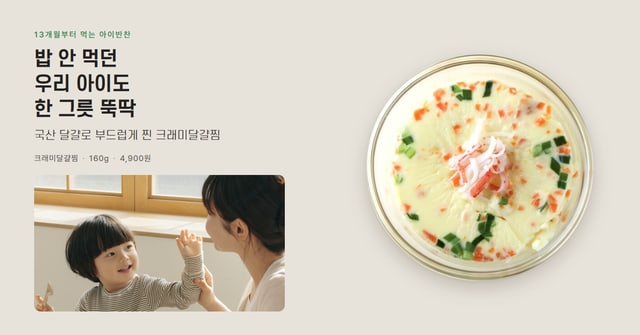
각도 3
큰 제목에 영양. 상세페이지의 재료 함유량·영양성분 표에 있는 사실만 썼습니다.
틀 1 · 에디토리얼 (3차) · 작은 글: 국산 달걀 55%에 당근·부추까지 · 체크: 단백질 9g (1회 제공량 160g), 국산 당근·부추, HACCP 인증

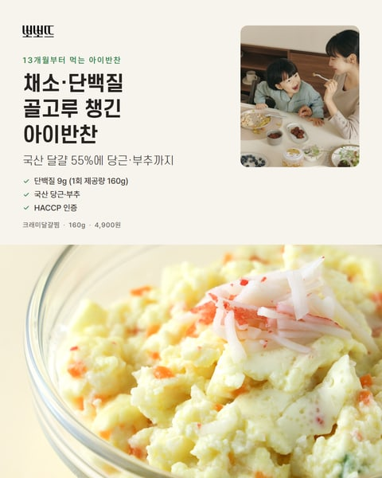
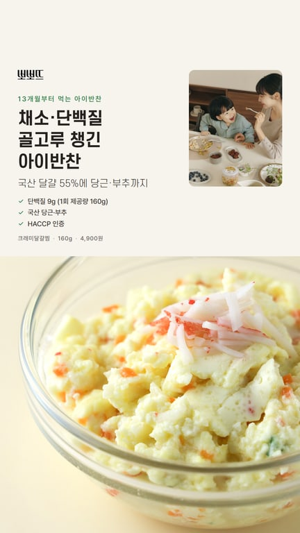
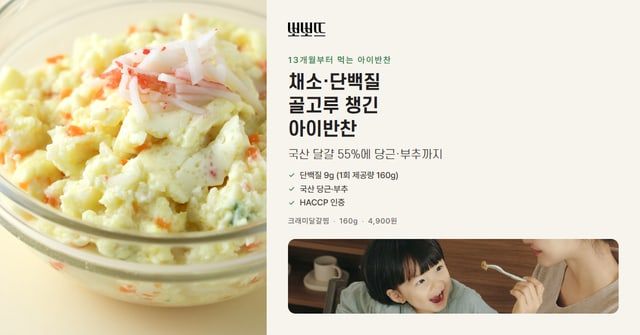
틀 2 · 다크 (5차) · 작은 글: 국산 달걀 55%로 만든 크래미달걀찜 · 체크: 국산 달걀 55%, 단백질 9g, HACCP 인증

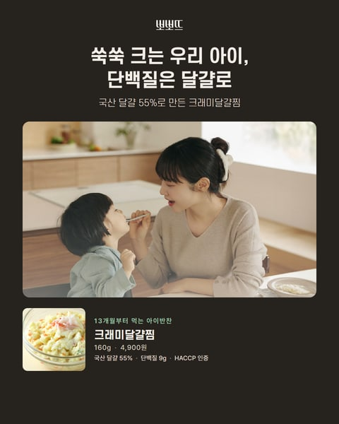
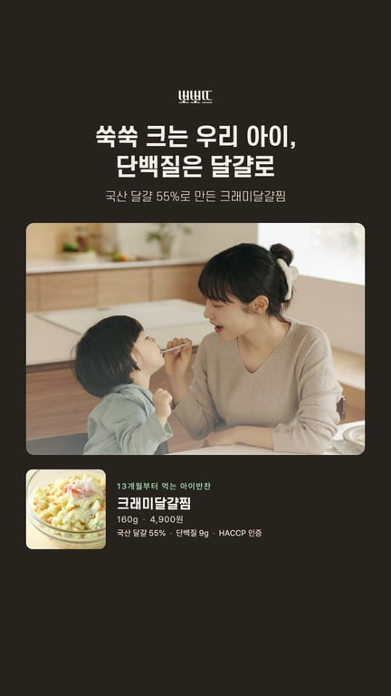
틀 3 · 질문형 (5차) · 작은 글: 달걀 단백질과 국산 채소를 한 그릇에 · 체크: 국산 달걀 55%, 국산 당근·부추, 무·양파·다시마 야채육수

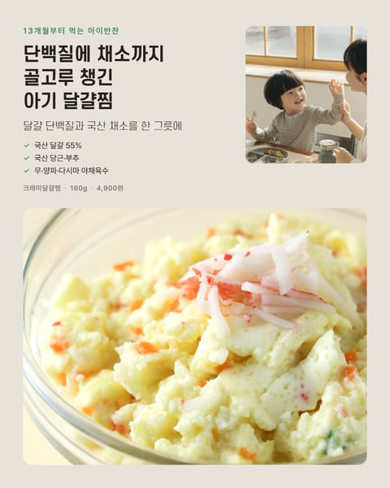
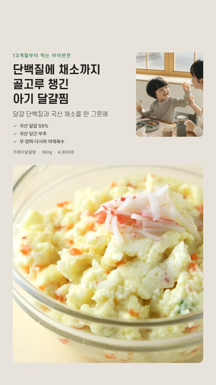
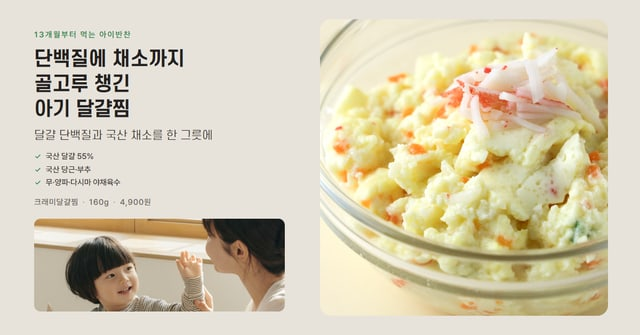
각도 4
큰 제목 한 문장에 밥태기와 영양을 함께 넣었습니다.
틀 1 · 에디토리얼 (3차) · 작은 글: 국산 달걀 55%에 당근·부추까지 · 체크: 단백질 9g (1회 제공량 160g), HACCP 인증

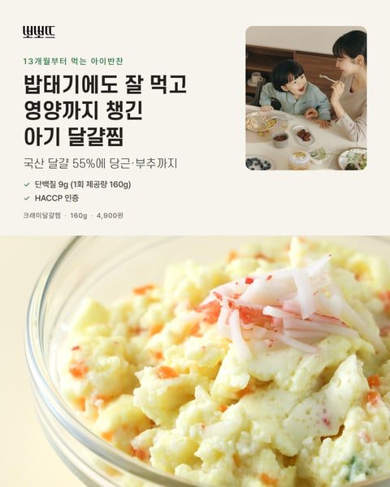
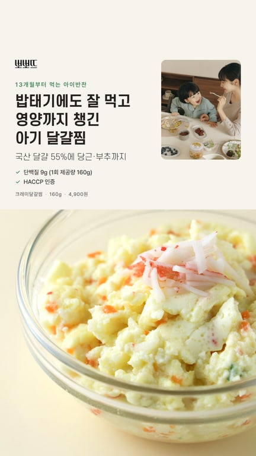
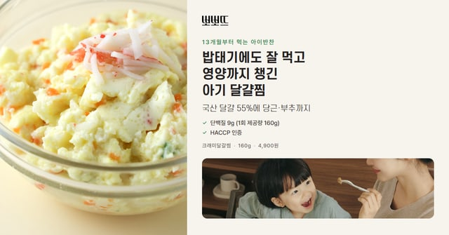
틀 2 · 다크 (5차) · 작은 글: 국산 달걀 55%로 만든 크래미달걀찜 · 체크: 국산 달걀 55%, 단백질 9g, HACCP 인증

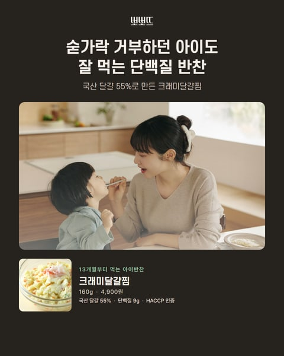
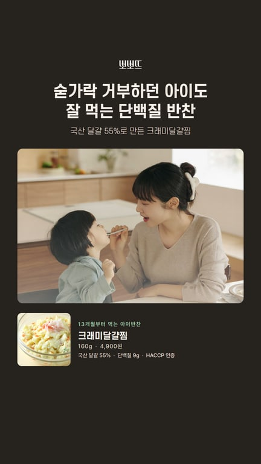
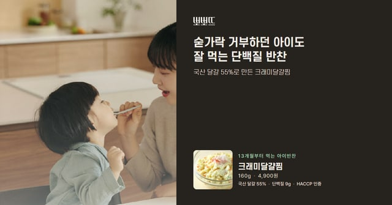
틀 3 · 질문형 (5차) · 작은 글: 달걀 단백질에 국산 채소를 더한 달걀찜 · 체크: 국산 달걀 55%, 국산 당근·부추

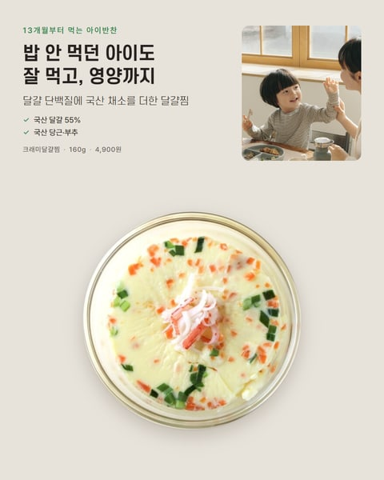
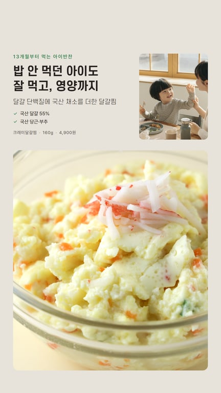
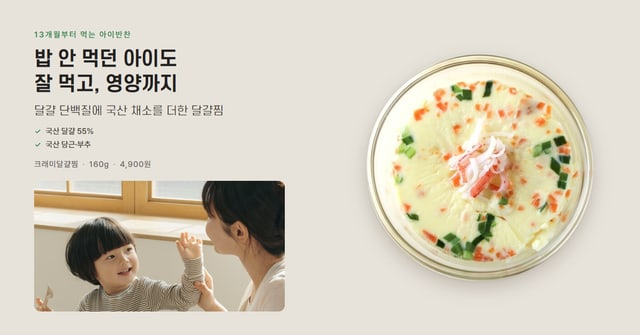
기존 4차 후기형과 같은 후기입니다. popote.co.kr(기존 몰) 한우깻잎나물불고기 상품후기 중 별점 5점, 두세 문장 이상인 실제 후기이고, 글자는 원문 그대로입니다(/ = 원문 줄바꿈).
| 작성자 · 날짜 | 원문 | 쓴 곳 | 원문 |
|---|---|---|---|
| zyzy*** ★5 · 2022-07-25 | 16개월 곧 17개월되는 아이가 참 잘먹어요 / 뽀뽀뜨 지인통해 알게되고난 이후 육아가 훨씬 수월해졌어요-! / 깻잎 불고기 간이 강하지도않은것같고 제가먹어도 맛있어요 / … | A안 | 보기 › |
| jomi*** ★5 · 2021-02-04 | 와!! 이번에 또 주문하려고 들어왔어요 ㅋㅋ / 이번엔 3팩 구매하고갑니다 / 아기가 정말 잘먹어요 / 깻잎불고기랑 / 밥 한그릇 뚝딱 합니다!! ㅋㅋ | B안 세로형 | 보기 › |
| choi**** ★5 · 2017-12-13 | 아기가 너무 좋아하구요. / 제 입맛에도 딱이예요. / 진짜 여기 반찬주면 아이가 밥을 너무 잘 먹어요. / 재구매의사있습니다. | B안 | 보기 › |
| qktk*** ★5 · 2017-11-09 | 아기 이유식 끝나고 매일매일 멀 해먹여야하나 고민투성이였는데 그 고민들이 한꺼번에 사라졌어요~아기도 잘 먹구 자주 애용할께용 | C안 | 보기 › |
popote.kr 크래미달걀찜 상세페이지의 표기만 썼습니다.
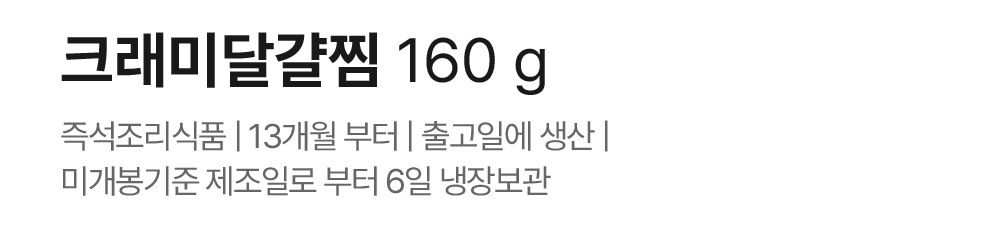
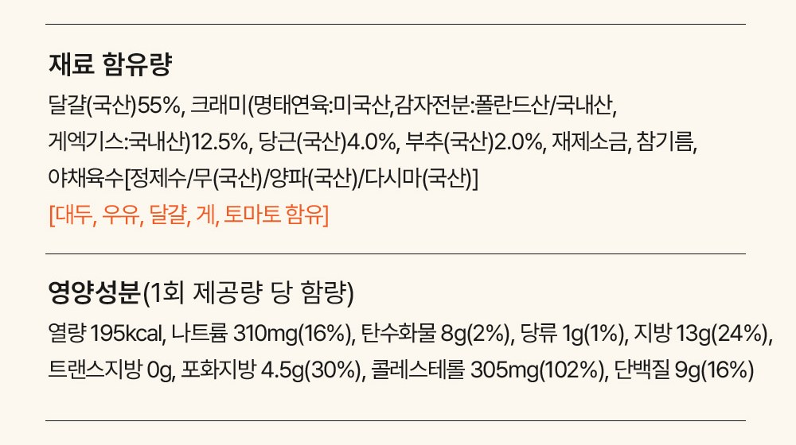
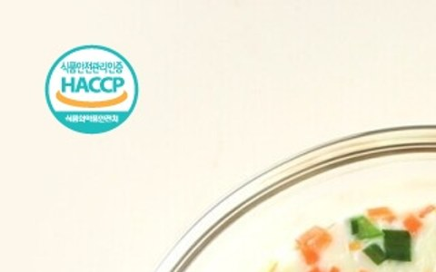
Meta 광고 라이브러리에서 몇 달째 돌고 있는 유아식 광고입니다(10월 19일 확인).

세레니티 키즈 (미국 유아식)
Meta 광고 라이브러리 · 9월 11일부터 게재 중 (광고 2개에서 사용)
가져온 것 “5g of protein per pouch” — 단백질 숫자는 작은 체크 목록으로, 큰 제목은 엄마 말투로.
원본 보기 ›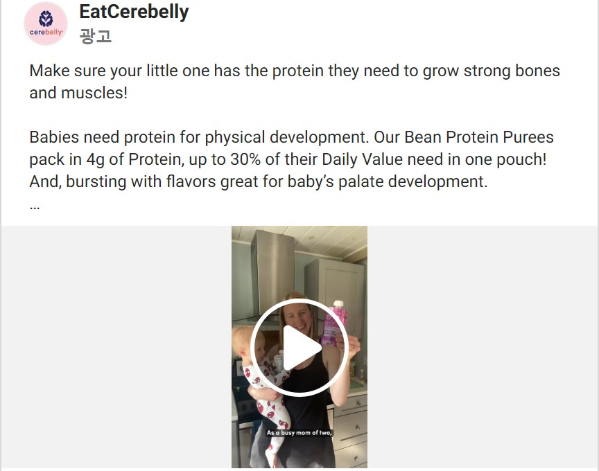
세레벨리 (미국 유아식)
Meta 광고 라이브러리 · 6월 23일부터 게재 중
가져온 것 “아이가 크는 데 필요한 단백질” — 영양을 성장과 묶어 말하고, 엄마와 아기 장면을 크게.
원본 보기 ›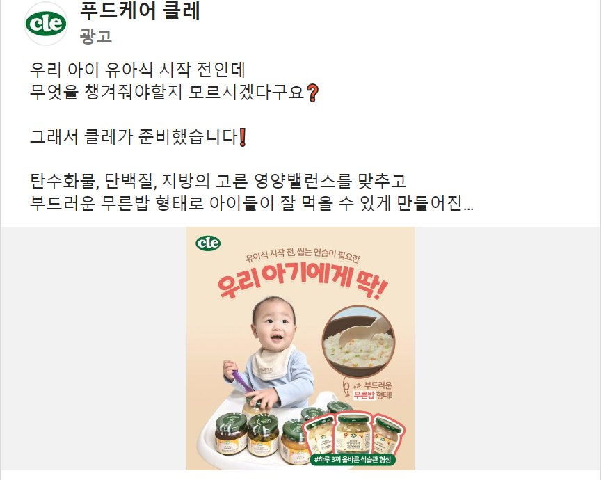
푸드케어 클레 (국내 유아식)
Meta 광고 라이브러리 · 6월 9일부터 게재 중
가져온 것 “탄수화물·단백질·지방의 고른 영양밸런스” + 아기 얼굴 + 제품. 영양 각도의 구성.
원본 보기 ›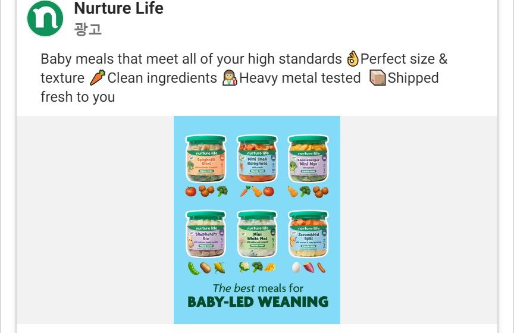
너처라이프 (미국 유아식)
Meta 광고 라이브러리 · 7월 6일부터 게재 중 (광고 3개에서 사용)
가져온 것 “Perfect size & texture + Clean ingredients” — 잘 먹는 이유와 재료를 한 문장에. 밥태기+영양 각도의 뼈대.
원본 보기 ›| 사이즈 | 올릴 곳 | 장수 |
|---|---|---|
| 1080×1080 | 메타 피드 · 네이버 · 구글 | 12장 |
| 1080×1350 | 메타 피드 (세로 4:5) | 12장 |
| 1080×1920 | 메타 스토리 · 릴스 | 12장 |
| 1200×628 | 네이버 GFA · 구글 디스플레이 | 12장 |